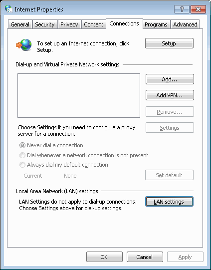
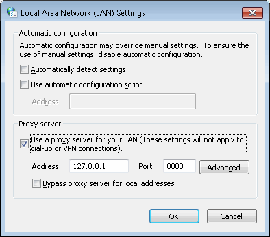

Android Proxy Server
The Android Proxy Server can be used to share an Android phone's internet connection with a computer.
Download
Download the Android Proxy Server App here:
ProxyServer.apk
How To Use
- Download and Install the app to your phone
- Connect your phone to your computer via USB
- Enable USB Debugging on Android Phone
- From the Home screen: Menu > Settings > Applications > Development > USB debugging
- On your computer, from the command line run "adb forward tcp:8080 tcp:8080"
- Note: if you do not have the Android SDK installed you can find a standalone version of adb by googling 'download standalone adb'
- Set your proxy server to 127.0.0.1 port 8080
- Control Panel > Internet Options > Connections Tab

Click 'Lan Settings'

Now you're all set up and ready to go!